出發: 2019年1月30日下午3：45 香港快運航空
第1日: 香港往泰國北部清萊
第一晚住嘅酒店是在郊區， 環境好清靜， 不過因為唔熟悉地方， 所以搵店主幫我哋買晚餐，係兩盒炒飯加煎蛋， 連埋佢嘅服務費總共收我哋 160匹。
每間獨立屋前面都有啲石枱櫈畀人食嘢坐下傾計， 見到個識少少英文單字嘅泰國人， 佢仲請我哋食泰國柑， 好甜好好食， 但係睇外表係唔似咁甜嘅。
食完炒飯之後我哋行出去大街， 都只係得一兩檔小食， 於是買咗個類似茶果嘅東西， 20匹有兩個， 鹹鹹哋冇乜特別， 跟住就行返入渡假屋休息。


第2日: 清萊乘巴士到美沾
我哋下午入到美沾渡假屋， 呢間比起上一間仲靚啲添， 經過一條長廊入到去酒店大堂， 攞咗房間之後， 我哋就喺渡假屋範圍行下， 原來地方好大， 除咗個大花園， 仲有個私家泳池， 我地房間係138號， 非常好兆頭， 其實住呢間度假屋，已經好似係一個景點， 因為四周圍環境好優美， 餐廳外面係一條河， 坐在餐廳可以周圍睇下風景， 係一個好悠閒嘅地方， 而且價錢唔貴， 住一晚包埋早餐都係接近港幣400元， 係一個度假嘅好地方。


因為我哋到達嘅時間係傍晚五點,所以有時間去市集行下,原來喺度假屋附近行出去冇耐就係一個food court, 有好多泰式食物,我哋買咗個泰式沙律， 一碟蝦炒飯，一碟泰式炒河，兩件炸雞同一個椰青, 因為好早食晚餐，所以買定個蛋糕同曲奇做宵夜。
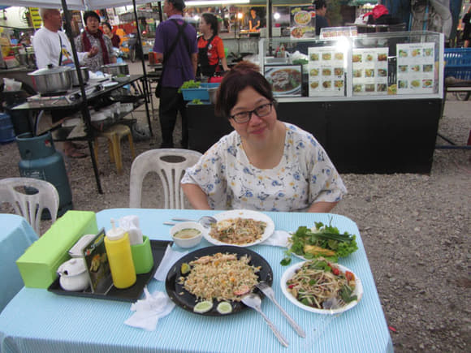
第3日: 美沾乘綠色雙條到美斯樂
我哋在接近中午時分乘綠色雙條到達美斯樂 , 緬甸邊境山上的一個小鄉鎮。午餐食雲南拉麵雲吞同埋煎餃子,係呢度嘅特色食品, 味道好清甜, 啲雲吞皮唔會黐到一舊舊, 餃子皮薄餡靚, 而且價錢便宜。

為咗揾晚餐繞住個山行咗成個圈， 唔係太多鋪頭開門， 最後搵到間燒雞店， 入去坐低先至見到張海報， 其實招牌菜最經典係條燒烤魚， 呢隻魚好特別, 魚皮係好硬嘅， 所以燒唔爛條魚， 仲保持到條魚嘅鮮甜味道同埋肉質, 我哋叫咗一條魚同埋半隻燒雞， 燒魚仲係配埋定食， 有菜同埋檬粉， 撈埋啲醬汁雖然少許辣但係好好味， 仲加多個白飯添， 初頭驚食唔曬， 但係最後係食清光。


今晚住呢間酒店， 晚上冇熱水沖涼， 硬著頭皮快快手手抹身， 想去搵服務生點知佢哋放曬工走曬，第二朝即刻搵酒店嘅服務生開返個熱水掣， 先至有啲微溫嘅水， 佢哋話呢度嘅水就係微溫已經係最高溫㗎啦! 真係無奈! 其實清邁呢度間間酒店都係得微溫水沖涼㗎， 如果怕凍要自己煲定熱水， 不過房間係冇水桶或者水盆， 要裝熱水洗都唔容易。
第4日: 美斯樂穿越幾個山頭遠足
今日行山繞過好幾個山頭, 途經有三間教會,有一間附設小學, 於是好奇行入去望下, 有老師上緊堂,初初以為佢哋係等緊放小息, 望入去見到老師坐喺度教學, 但係啲學生係喺度嬉戲緊, 其實山區有書讀已經係好幸福, 但往往係身在福中不知福,佢哋唔需要著校服,只係著返平常嘅衣服上課, 跟住行過隔離應該係宿舍嘅地方,果然有位牧師行出嚟, 同佢交談幾句知道佢係雲南人,佢話呢度有好多來自香港嘅傳道人添, 牧師想招呼我哋坐低,但係我哋因為趕時間要上路就婉拒咗, 互相祝福之後就離開。
因為今日嘅行程主要都係行山,所以只係食啲輕便嘅早餐, 由酒店行出去,經過一間餃子店就行入去食鍋貼, 跟住再上路經過好幾個茶園同埋咖啡園,佢哋有呢啲嘅農產品所以生活都唔會太困苦, 泰北山區嘅經濟同生活都改善咗唔少,其中一個叫做101嘅茶園, 上面風景好優美,我哋坐低飲咗綠茶珍珠奶茶,味道果然唔同, 綠茶味好清香, 珍珠係果實做而唔係麵粉做, 所以除咗口感好, 亦都係健康啲嘅飲品, 飲完都回味無窮, 而且價錢只係50匹, 即係港元12元, 喺泰國呢邊屬於中價, 平時響街頭買嘅珍珠奶茶係25匹, 但係味道當然就比不上啦!
行山途中,行下停下休息下,坐喺草地食泰國柑，今朝喺7仔買嘅蛋糕仔， 作為我哋嘅午餐， 因為行山唔可以食得太飽。

行到將近回程尾聲嘅山邊， 已經天黑, 睇咗好幾間飯店， 最後揀咗間有小菜食嘅， 老闆推介咗一道菜， 係臘肉炒青椒， 我哋再加一碟炒青菜， 一碟蛋炒飯， 全數一共330匹， 因為小菜嘅份量都唔算大， 都係食得唔算太飽。

食完晚餐, 行到我哋酒店對面， 見到有張poster， 張相有燒賣好靚， 燒賣上面加咗啲炒蒜頭， 於是入去坐低食一打燒賣， 老闆娘係即刻整畀我哋食嘅， 所以喺等候中參觀下呢間舖頭嘅擺設， 佢哋有好多茶具茶葉擺賣， 我見到佢個小妹妹喺度泡茶， 於是問下呢啲係咩嘢茶， 小妹妹唔識聽就叫老闆娘出來回答， 佢話有烏龍同綠茶同埋好多其他嘅茶都有， 我隨便講吓綠茶好喎， 跟住就返埋座位坐， 老闆娘整完燒賣畀我哋， 就泡一壺綠茶放低， 我哋就一路食燒賣餸茶， 果然係好配搭， 到我哋結帳嘅時候，知道壺綠茶原來係老闆娘送嘅免費飲品，老闆娘真係熱情， 我哋多謝完就返酒店休息。
第5日: 美斯樂乘車往 Huai Khrai、遊覽董山
大清早五點幾就醒咗,梳洗完畢就上天台影晨光, 然後返房間食早餐, 收拾行李就出去等車返Mae chan,車站旁邊有間coffee shop, 仲有康樂棋玩添。
乘雙條返回 Mae chan, 再轉乘小巴到 Huai Khrai, 吃完午餐後找尋巴士站去董山, 原定會有雙條車去,但係唔夠客所以要包車, 來回係600匹, 剛巧有星加坡夫婦問我哋係咪去同一景點, 結果我哋就一齊共享包車,每個單位300匹, 我哋就一齊出發。
董山皇太后御花園和董山皇太后行宮入場費每位都是90匹， 我哋只係揀咗呢兩個入場，因為回程時間緊迫， 我哋約咗原先嗰兩位星加坡人五點鐘要離開景點，因為佢哋要趕轉乘其他車返清邁 。
第6日: 美塞市
酒店食自助早餐， 係呢五日呢最豐富嘅一個早餐。( 應該話係成個行程最豐富嘅早餐)
今日見有時間就去理髮，只係350匹連洗剪， 個泰國師傅好似香港嗰個師傅咁嘅款， 理完髮同佢影張相就走啦。其實因為出發前我用開嘅師傅轉咗工搵唔到佢,我又唔想隨便搵個師傅幫我理髮,諗住去完旅行先算,咁啱畀我見到有間髮廊喺我酒店附近,而且我只係修修個髮尾,應該唔會出現問題,評估咗呢個風險之後就即刻決定理個髮過新年啦!呢次係第一次喺海外剪髮,其實泰國師傅都剪得唔錯㗎!
酒店附近冇夜市， 所以就響酒店附近嗰間shabu 食自助餐，兩位總共518匹， 食物好豐富， 有海鮮，有肉，有菜 ，有壽司，有飲品， 又食餐飽嘅， 跟住返酒店梳洗完瞓覺。
(呢個晚餐係成個行程最好嘅一個晚餐)

第7日: 清萊
上午遊覽完美塞泰緬邊境及金三角公園後, 下午乘巴士到清萊, 往酒店房間安置好行李, 已經是晚上。
由酒店行去清萊鐘樓 , 影完相後經過一啲小檔口,聞到香噴噴, 於是停低買咗兩串牛肉串,仲有生菜包住嚟食, 兩串都只係20匹。

跟住行去夜市， 響夜市食晚飯， 人山人海成個旺角咁嘅樣， 巡咗兩個圈之後，決定買個菠蘿炒飯，雜錦天婦羅同埋一公升可樂, 總數210匹， 真係好抵食， 不過場地上欠缺管理，算係有人執枱喇, 但係執啲唔執啲, 餐具佢會執開但係啲剩餘嘅即棄餐具快子同埋菜喳、雞蛋殼、空水瓶就冇人執, 佢哋火鍋係用炭爐嘅,有啲用完炭爐仲放喺地下， 個炭爐係放喺鐵枱上面燒， 燒到枱中間穿佐個大咕窿， 我哋攞嘢埋嚟食都要好小心咁擺埋一邊，驚跌咗落枱底！
第8日: 清萊市區、白廟、聖獅公園
朝早八點鐘食完個酒店自助早餐， 開始去清萊 市內的清萊鐘樓、清萊星期六步行街、帕辛寺行下。10:30 在清萊舊巴士站 搭巴士去白廟參觀。

參觀完白廟, 12:30 喺白廟嘅商場食午飯， 一份海南雞飯，一份菠蘿炒飯， 總共130匹。
坐雙條車去公園150匹兩位， 公園免費入場， 坐公園遊覽車每位100 匹， 呢個公園都好大，成個大山頭有花有草有茶葉，仲有好多動物添,有牛有馬有長頸鹿, 遊公園嘅車可以喺每個景點落咗車行完影完相再上番車，每10分鐘就有車嚟接我哋繼續遊公園嘅其他地方， 好彩有呢種設施我就唔使暴曬啦！Alex 當然係喺公園四圍拍照， 我就梗係揀喺涼亭旁邊，試飲佢哋出品嘅烏龍茶， 果然好清香唔會太濃，飲咗之後個口係甘香嘅。 其實今日係好曬㗎, 如果喺度行一兩個鐘,我怕白人變黑人呀! Alex要追求拍低每個靚景,佢都唔理會曬黑嘅後果!
三點半搭雙條車翻市集， 時間尚早就行下 街市， 見到一檔檔賣嘢食， 於是諗下不如掃街， 好多嘢都想食， 不過都要諗下食唔食得曬先好買， 最後揀咗四樣嘢， 燒賣，炸魚 ，豬手同埋個白飯， 帶返酒店房間做晚餐， 我哋自己帶咗私家筷子， 房間有匙羹仔， 有杯碟， 我哋就用呢啲餐具嚟食我哋買返嚟食嘅晚餐， 仲有半支一公升琴晚飲淨嘅可樂， 咁就成為今晚晚餐完美嘅配搭。
(點知食半夜就肚餓喇, 痾完瞓一陣又起身屙,屙咗三四次先至屙清曬, 第日都唔敢亂掃街啦!)

第9日: 清邁
今日主要行程都係喺乘巴士往清邁交通上面。來到清邁, 行市集同埋夜市, 晚餐買咗個菠蘿炒飯, 鍋貼同埋炒河粉,可能因為太多油炒, 我哋兩個都食到肚屙！ 唉！ 好彩阿完冇事， 感恩!
第10日: 清邁拉查帕皇家花園
今日主要係玩 清邁拉查帕皇家花園 呢個主題公園。
大概十點包咗嘅篤篤車 ，由酒店出發去到主題公園係300匹, 呢個公園非常之大,好才有免費嘅公園遊覽車,入場費係每位200匹, 其實呢個價錢可能包埋架遊覽車,不過你坐唔坐都係要比200匹㗎啦, 個遊覽車正在每個checkpoint可以落車然後再上返車, 我哋玩到下晝四點鐘先至離開。
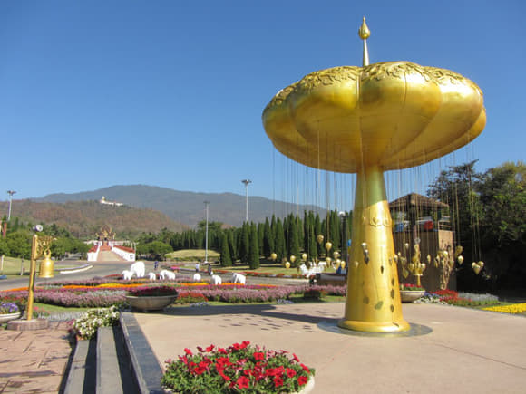

今日個主題公園， 有好多花同埋好多靚嘅建築物， 當然唔少得一個商場畀人購物啦， 我哋午餐都係喺food court度食嘅， 一啲簡單嘅粉麵都幾好味， 我仲買多份泰式曲奇餅食㖭， 食完行入商場， 睇睇下嘢見到有啲草本 產品， 個sales又畀我試下， 感覺都唔錯， 價錢都一般啦， 於是買咗兩樣嘢， 一個sleeping mask， 一支body gel， 呢支body gel就出事啦， 個蓋原來冚唔埋， 自動 彈開個蓋 ， 結果漏咗一半出嚟， 好彩放喺外袋有條手巾仔墊住， 淨低嗰啲我就用自備嘅膠樽仔裝返起， 嗰間香草公司其實擺緊展覽銷售， 我希望佢唔好比個包裝影響到佢嘅產品， 所以我寫個gmail畀佢, 影埋啲相畀佢睇叫佢留意番個包裝， 唔好畀個蓋冚唔返流曬啲產品出嚟。(但係個gmail打回頭send唔到㗎)

喺公園包咗架雙條車係300匹, 大概五點鐘就返到酒店附近嘅巴士站, 搵下巴士路線時間, 跟住又行街影相, 經過好多個城門, 又睇下有啲乜嘢啱食, 見到有一間都係做湯麵嘅, 但係因為中午 已經係食湯麵, 所以唔想再重複, 再行多幾條街,見到張相有海南雞飯, 但係冇得賣, 老闆娘叫我哋改食雞飯同埋雞翼飯啦, 都行到攰攰哋啦就坐低食, 點知嗰啲雞同雞翼都係鹵水嘅, 可能啲鹵水係太耐無銷路, 啲雞肉同雞骨已經諗到離開曬, 勉為其難食咗幾啖就走啦, 點知一樣中招, 之前都懷疑清邁啲鹵水好有問題, 因為食一次屙幾次, 唉！真係唔食好過食啦, 以後都唔好喺呢啲地方食鹵水嘢啦!

第 11日: 清邁乘巴士到宗通
搭車離開清邁, 因為唔識泰文根據自己搜集嘅資料坐一百匹篤篤去昌普阿長途汽車站, 然後搭巴士去宗通鄉村, 巴士兩個人係68匹,車程其實一個鐘多啲, 但係因為佢中途要停下站上客停車, 總共停咗一半嘅時間, 終於用咗三小時先到達酒店。
由於之前兩晚食嘅嘢都令到腸胃唔好， 經過一間賣湯粉嘅地方就食咗一人一碗肉丸湯河， 嗰度好鄉村風味，傢俬簡單，環境清靜， 其實睇落啲傢俬係好似執返嚟用,只不過修修補補既枱椅就畀客人用餐, 都可以話係環保嘅。
泰國呢邊啲酒店多數都唔供應護髮素， 我帶嚟嘅只係作後備所以唔多， 呢度見到有間7仔就入去買返支旅行裝嘅護髮素， 只係29匹 即係港幣約七蚊幾,仲買咗包花生愛嚟送咖啡,酒店係有免費咖啡飲嘅!
晚餐原本想去食Pizza, 但係6：00行到去已經關佐門，於是選擇酒店側果間西餐廳，我中午已經查詢過有意粉同扒類食品，最後選了雜錦意粉，肉眼扒，煎魚柳 同埋叫咗泰式可樂飲品， 係一個幾豐富嘅晚餐。
食完晚飯行去7仔買咗兩個蛋糕同埋yoga做點心。


第12日: 茵他儂國家公園、乘巴士往福鄉鎮
酒店供應麵包同埋咖啡做早餐， 我就食咗個自己買嘅杯麵，Alex就食咗個日式飯團, 都係琴日7仔買嘅。

今日包咗部車去咗茵他儂國家公園內嘅四個點, 包嘅係雙條車,價錢來回係千五匹, 四個景點中間都會停低畀我哋去自由活動, 最先係上到山頂, 跟住係去花園, 跟住係去睇兩個塔, 最後係去睇瀑布, 啲景色都好特別, 同以往日韓之旅遊都好唔同嘅。
由上晝八點半出發玩到下晝差不多三點鐘先至食我哋嘅午餐， 所以簡單食兩碗河粉同埋飲支可樂， 跟住又搭巴士去下一站嘅福鄉鎮 (HOD)， 呢個站嘅酒店直情係住入鄉村嘅民宿， 我哋間民宿係對住條河同埋一大塊田園，真係有置身於歸田園居嘅感覺!
為咗搵晚餐又行咗成個區, 都係一啲小販嘅擺賣， 想搵間企理啲嘅餐廳都冇嘅， 於是小心翼翼去揀啲合適嘅食物做晚餐， 結果買咗兩隻炸雞髀， 跟住去7仔買兩個杯麵同埋一支綠茶，喺市集買咗50匹一大袋士多啤梨， 咁就成為我哋今晚嘅豐富晚餐。
返到民宿嘅大堂， 對住湖光山色同一大塊田， 坐響木櫈， 對住個湖食晚餐， 真係覺得自己好似歸隱於世外感！ 好寧靜好悠閒慢慢享用我哋嘅晚餐。


之後返上房享用埋我哋之前喺七仔買嘅綠茶蛋糕做宵夜， 沖番個靚嘅熱水涼就可以教教豬啦!
第13日: 福鄉鎮 乘雙條往夜沙良
今日行程主要都係搭車去夜沙良(Mae Seriang), 順道玩多兩個景點: 宏偉峽谷國家公園 Ob Luang National Park 同埋有泰國南怡島美譽之稱 嘅 Boa Keaw Pine Park。
 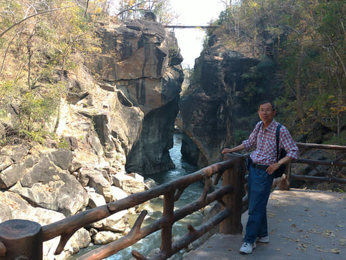
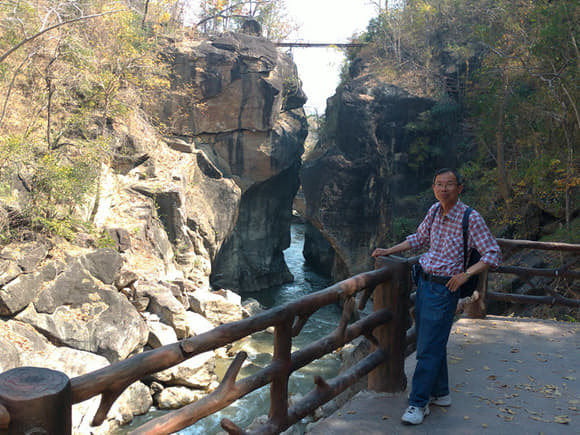

跟住就去我哋下榻嘅酒店入住, 呢一間又係好鄉村嘅民宿, Alex去咗行寺廟睇風景, 因為條路好曬所以建議我唔好去, 我喺酒店附近搵左間做按摩, 做咗兩小時費用500匹,好舒服係全身按摩同埋有一個鐘係做腳底按摩 。


差不多晚上七點鐘Alex返咗嚟同我去食飯， 都係食返啲例牌嘢, 一個海鮮炒飯, Alex話好好味, 啲海鮮真係好新鮮, 我食咗個鹵水豬手飯, 果然即食即見效, 喺泰國真係千其唔好食鹵水嘢呀! 返上酒店即刻屙肚喇， 好彩只係好輕微， 因為我食嘅份量唔多， 沖返個涼瞓返覺就冇事啦。


第14日: 夜沙良鄉鎮一天遠足遊
酒店有早餐供應， 食完早餐就喺區內遊覽。
行過一間賣種子嘅鋪頭， 見到有啲可以水耕嘅種子， 價錢好平100匹有七包， 揀咗啲生菜同香草種子， 返香港可以放喺魚缸度水耕試下種唔種到， 作為我哋今次旅遊嘅手信 。
到咗差不多十二點半， 行過路邊聞到香噴噴炒嘢嘅味道， 於是行過去睇下有咩食， 見到老闆炒咗盒飯外賣， 我哋於是叫咗一個炒飯一個炒河粉就坐低食啦， 見咁熱想叫支可樂飲下， 點知老闆話冇賣飲品,有凍水任飲,佢又做少咗生意啦!


響夜沙良鄉鎮行咗成日, 去到大概六點半, 睇咗幾間食肆, 發覺都係做炒飯炒河粉之類嘅嘢, 於是我都係去返琴晚嗰間食海鮮炒飯, 起碼有質素有信心, 今晚加多個扎肉沙律食, 好好味啲青瓜又新鮮, 結帳都只不過係140匹。
 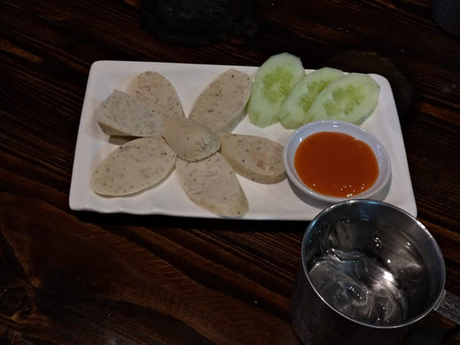
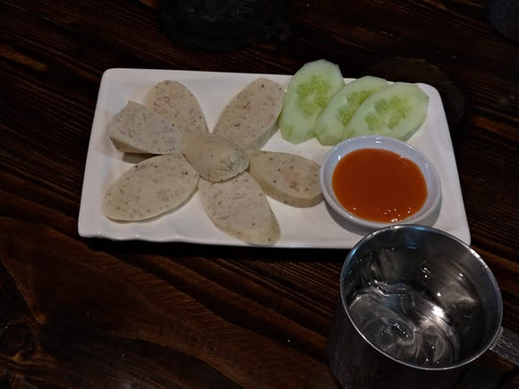
第15日: 成功挑戰 1864個彎道到湄宏順
因為要趕七點早班車去湄宏順, 所以琴晚酒店為我哋預備定三文治做早餐, 我哋食完就即刻去巴士站上車。
成功挑戰咗1864個彎到達Mae Hong Son, 車程係三個小時, 秘訣係唔好食咁多嘢, 就唔會暈浪或者嘔吐, 之前驚適應唔到買定話梅, 結果都唔需要用。
到咗酒店, 老闆遊說我哋參加嗰一日遊， 每位900匹，都可以接受就報咗名明天去玩, 原來聽日係情人節!
今日只係酒店附近遊覽，有市集同埋上咗山頂睇日落， 仲喺山頂間coffee shop 飲 green tea latte 㖭!


睇完日落睇埋個夜景，跟住去夜市食烤魚燒雞翼飲可樂，總共消費220匹， 仲係響一個好靚嘅湖邊度享用呢個晚餐。
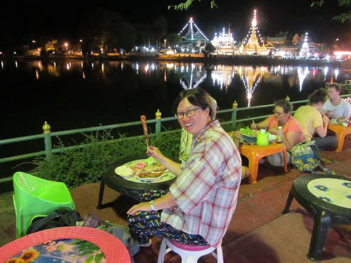第16日: 湄宏順 VIP包車 一天遊
今日係情人節, 咁啱我哋報咗個一日遊， 原來係VIP包車包司機, 會去好幾個唔同嘅景點, 經過好多彎彎曲曲嘅山路, 第一站去到一個長頸族部落, 啲人都係帶啲金環圍住個頸，條頸越長越靚, 仲買咗條手織嘅頸巾做手信,當我哋行完長頸村準備走嘅時候， 有個女人揸住張紙條同我講話500匹….500匹， 我唔明佢做乜，我心諗唔通要籌款， 冇理由一定要我畀五百匹佢㗎， 一於唔睬佢，咁佢就同個司機嘰嘰咕咕咁唔知講乜， 跟住都係溝通唔到 ,就打電話搵人翻譯， 原來佢搵咗酒店個老闆同我講長頸村係要收500匹入場費嘅， 佢哋收入場費又唔係入場收，係離場前收， 其實條村冇乜建設， 人又唔多，我諗如果入場嗰時知道500匹係唔會有人入去㗎囉 ！

 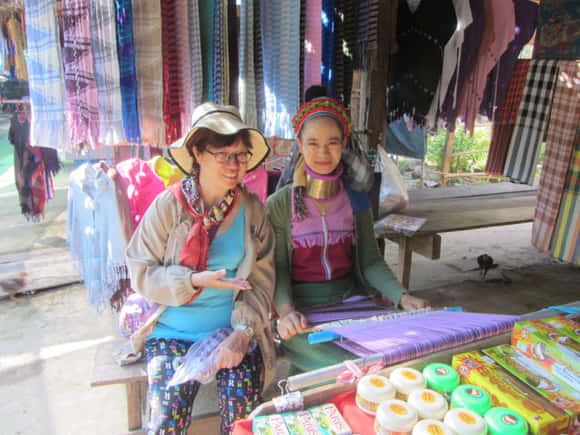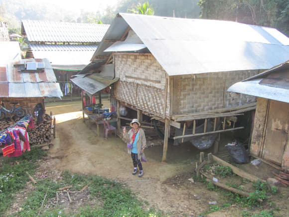
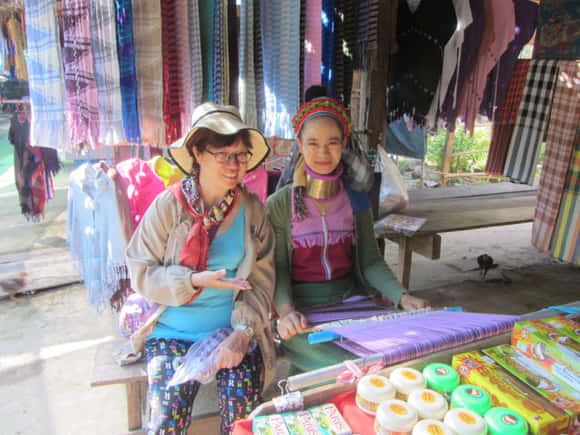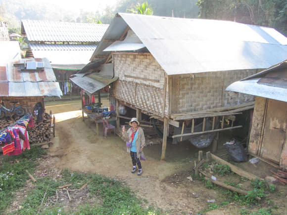
跟住第二站去 Su Tong Pae 竹橋 。 竹橋全長約 820公尺, 大部份蜿蜒於稻田上, 風景非常漂亮, 是全泰國最長的竹橋。


行完長橋影完相之後又去下一個地點, 又係穿過好多彎彎曲曲嘅山路，大概行咗一個鐘頭， 到達位於緬甸邊界的密窩村, 另一個湖光山色嘅景點 ， 我哋仲可以喺湖邊嘅餐廳食中餐， 呢度好寧靜 湖水好翠綠，湖邊仲有好多好靚嘅木屋， 呢間餐廳廣播住啲中國嘅音樂，令到成個環境好似去咗古代嘅感覺, 結帳都係320匹，論環境論食物都係超值。
食完午餐, 又攀過幾個上上落落的山頭, 來到位置同樣接近泰緬邊境, 風光如畫, 有泰國小瑞士美譽的 Pang Oung 湖。
 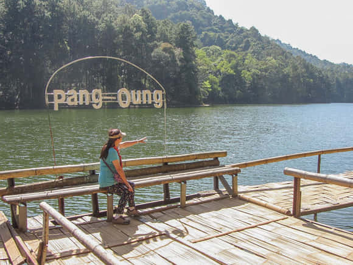
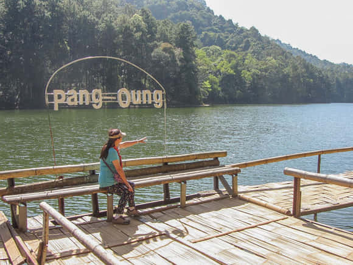
完成咗成日嘅行程之後， 行返去夜市區， 尋日有間餐廳二樓係望住個 昌康湖嘅，但係因為畀人坐滿曬所以冇上去， 今晚因為早咗食飯所以去睇下有冇位， 果然任揀大把位， 我哋揀咗個角位望到個湖， 同埋望到夜市全貌， 呢餐屬於我哋情人節晚餐， 我哋中午食嗰個係情人節中餐，依家夜晚嗰個係西餐， 食完又可以坐下欣賞埋夜景先走， 如果喺香港未食完，夥記都好想你走咁，因為又有下一枱客人等緊位， 呢度食嘢又唔貴又輕鬆，食得好舒服，好似做咗大老細感！
第17日: 成功挑戰 1102個急彎道到拜縣
一早食完酒店嘅早餐，就要趕九點嘅車出發 去下一站’拜城 ‘(PAI)。
車程兩個半小時， 呢個距離將我們從一個浪漫嘅地方帶到一個烏煙瘴氣嘅地方， 一落車 週邊所有人都係食緊煙嘅， 滿街都係車電單車客車貨車， 要行幾步路實在唔容易， 煙塵滾滾， 真係住兩晚都嫌多呀!
晚餐食火鍋, 份量質素都一般啦! 環境就擠迫一啲啦 ,同埋係冇開冷氣靠自然風! 都算係飽腹一餐算了!
 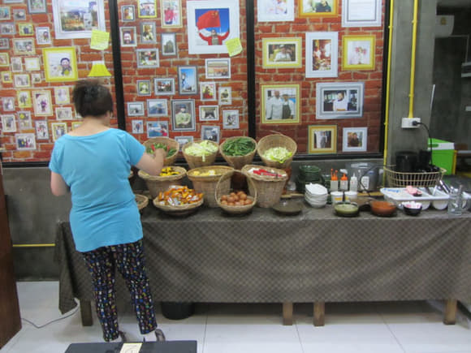
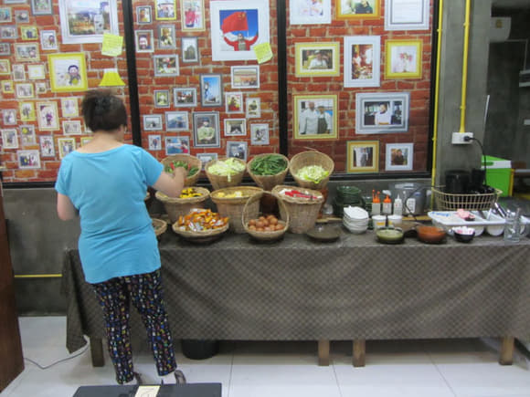
第18日: 拜縣鄉鎮一天遠足遊
早餐由酒店供應 , 行路去各景點, 午餐喺間環境優美嘅地方休息 順便食午餐, 飲綠茶,下午茶去士多啤梨園飲果汁, 食冰條。
玩完幾個景點, 回程搵唔到車, 唯有行一段路睇下有冇人載我哋， 行咗廿分鐘左右， 有一 部農村電單車經過， 我哋表示要去PAI, 佢就叫我哋上去佢部電單車度, 表示載我哋出去附近，梗係好過冇啦， 其實都幾遠㗎， 去到佢屋企就表示到呢度你哋慢慢行啦， 佢仲話5公里好似係咁講, 落車佢話唔收錢,不過我都畀咗100匹佢， 佢又唔係好意思收左錢，所以叫我哋上返車喇，載你出去近啲嘅地方先落車喇， 又再車我哋去 一段頗長嘅路， 呢度比較接近市區啦， 佢表示呢度都差唔多啦我哋就喺度bye bye啦! 我哋見佢車咗我哋都好長嘅路要再畀多一百匹去佢飲茶, 佢表示唔使, 但係我哋一定要畀佢, 就多謝咗我哋就落車喇!
晚飯又去返我哋尋日食過嗰間飯店, 叫咗兩個粉麵一碟油菜， 一份大春捲， 可口可樂加冰， 就完成咗今晚豐富嘅晚餐。
跟住就去行夜市，買佐Tshirt 同短褲， 作為紀念品又實用， 條短褲有兩個大袋可以放手機， 今次旅行比以前買多咗嘢，所以個背囊塞到脹卜卜! 其實個夜街唔係真係咁好行㗎，因為啲電單車穿來穿去， 啲人又鍾意揸住杯飲品四圍巡， 要左閃右避先行完條街。
第19日: 成功挑戰 762個急彎道到清邁
十點鐘上車去清邁, 要經過762個彎再加多一小時嘅公路先至到達清邁,全程係三個鐘頭。
 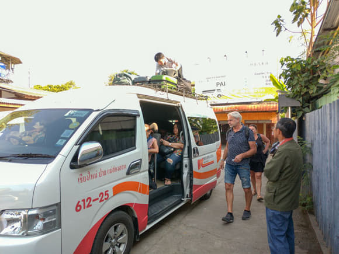
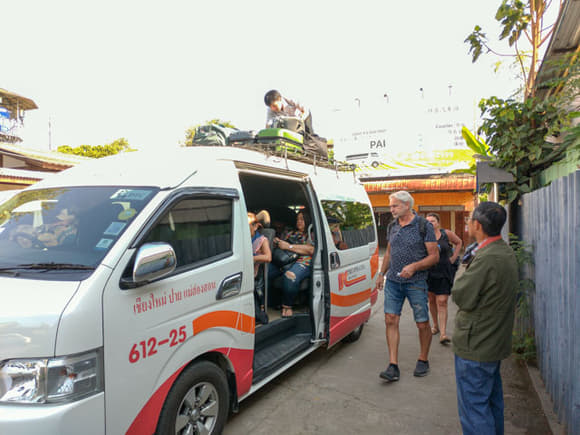
到咗清邁酒店放低行李, 先去食個午餐, 酒店樓下行兩步就有粉麵檔, 但係呢個旅程食得太多粉麵呀, 想轉下口味, 一時見到熟悉嘅麥當勞行入去睇下, 好多人好迫, 就行返出嚟, 過咗對面馬路見到有間食 pizza 嘅地方, 環境好正, 都係得兩枱客, 我哋就坐低叫咗個 pizza 同埋一個芒果糯米飯, 飲可樂, 因為試過呢度啲果汁一般都比較甜, 所以都係選擇飲番熟悉嘅可樂, 呢個pizza係薄批做嘅好香口好脆, 個芒果糯米飯又唔會太甜, 芒果好新鮮。

清邁嘅夜市條街係又大又長又多人, 又非常之多嘅檔攤, 非常之多嘅精品、用品、食品, 多到睇唔曬, 行咗大概三小時, 喺夜市都買咗幾件 T-shirts 作為紀念品, 又可以著, 同埋考慮唔好太重同埋實用性, 仲 買咗支凍水飲, 呢度多人多到都冇心機諗食乜嘢, 擠擁程度係超越咗行年宵嗰種。跟住搵地方食晚餐, 見到馬路旁邊有間 Burger King, 於是都唔諗咁多喇入去叫兩個餐食, 食完就返酒店休息 。
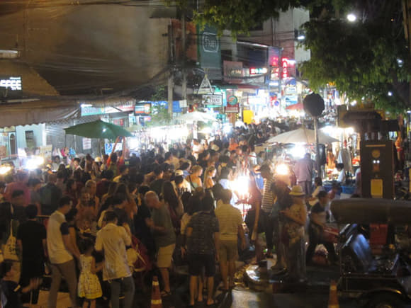
第20日: 泰北自助旅遊尾聲
酒店有早餐食， 呢間仲有新鮮芒果食㖭, 我哋食飽之後就喺附近散下步。


跟住就步行去清邁舊城北門車站, 搭車去清邁素貼山上的素帖寺， 雙條車60匹一位， 拐彎差不多200個才上到山頂， 跟住買飛搭電梯50匹一位， 條龍長到不知, 但都好快就到達素帖寺山頂啦。


午餐諗住食番啲簡單嘢喺酒店附近就算， 好似平時咁叫咗 一碗肉丸粉，一碗魚丸粉，同埋炒咗個青菜， 原來呢間啲肉丸同魚丸都係 自製嘅， 唔係現成買嗰隻， 好鮮甜好好味，個青菜雖然係清炒， 但係都好好味， 有時刻意周圍想搵啲好嘢食結果搵唔到， 隨隨便便搵一間，又會食到出乎意料之外咁好味, 作為 回程前嘅一個午餐真係唔錯， 結帳連埋可樂 都係180匹，認真抵食。